Feature 1: Simple Denoising + Adaptive Sampling
Simple Denoising: Bilateral Filter with Pixel Variance Estimate
 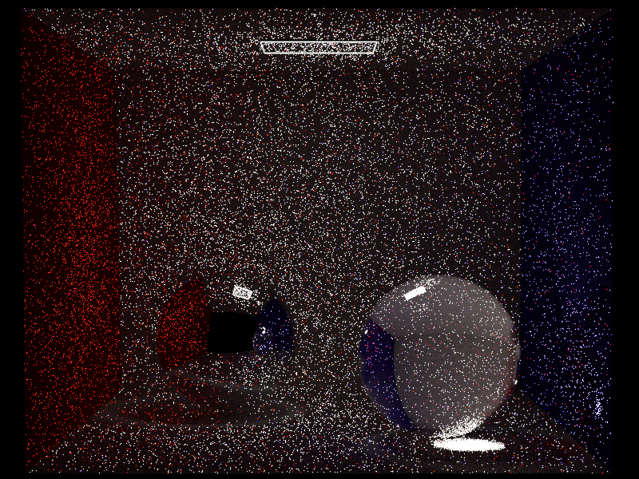
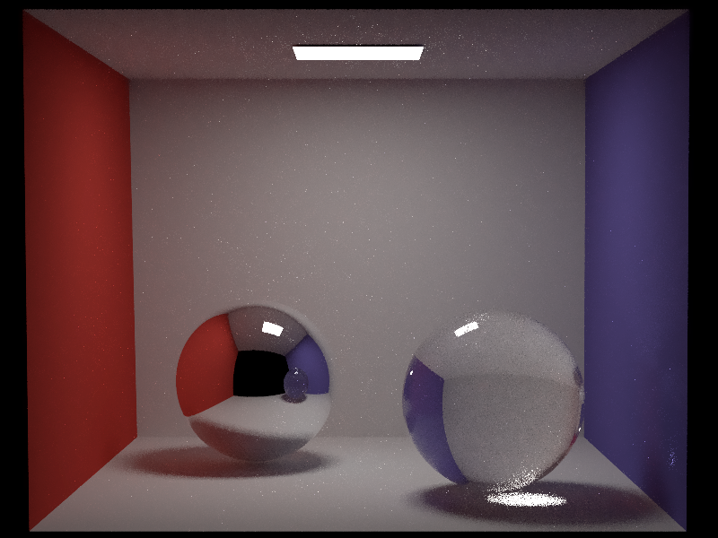
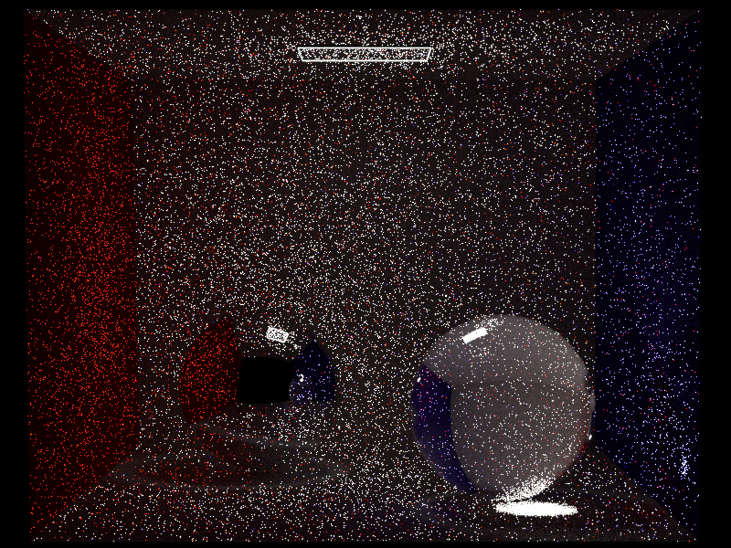
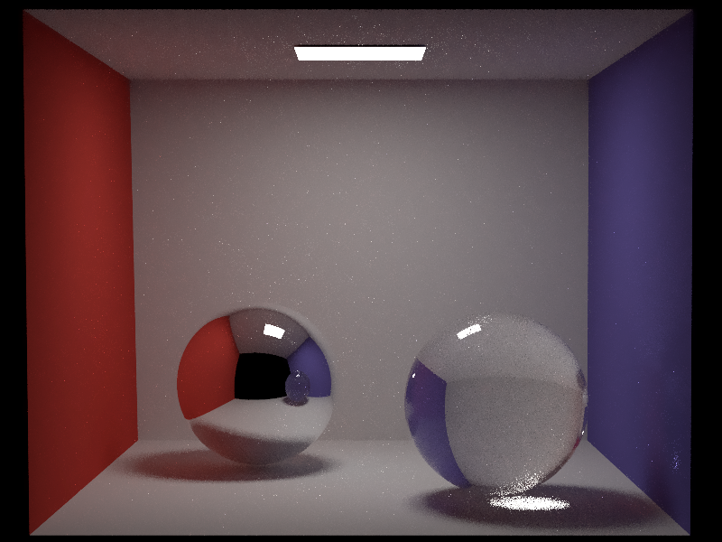
Adaptive Sampling with Pixel Variance Estimates
Feature 2: Advanced Camera Model
Reference Scene
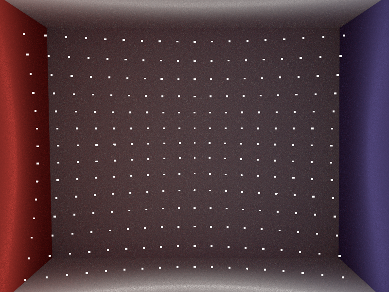Depth of Field
Here DoF
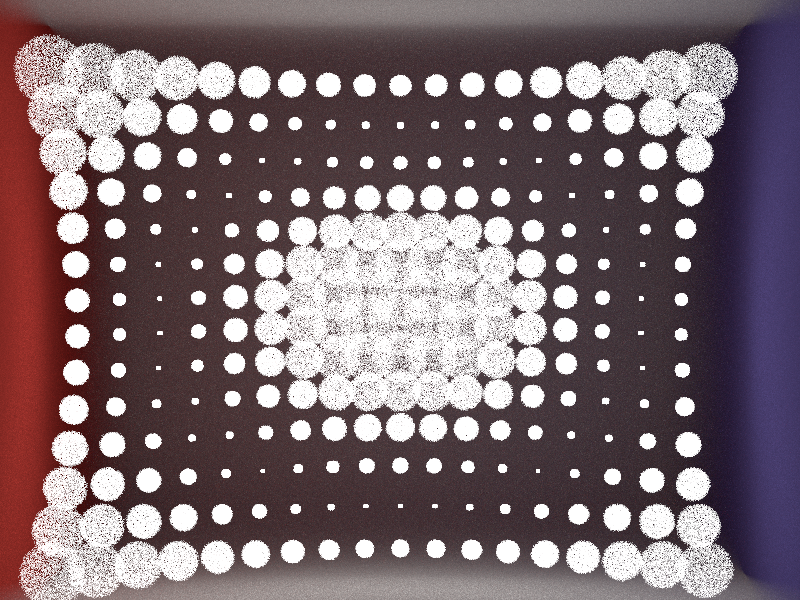
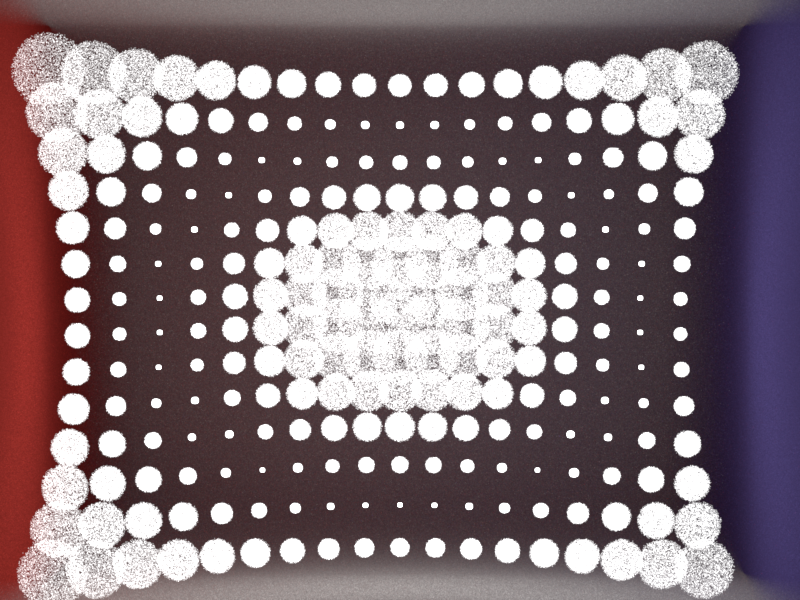
Lens Distortion
https://www.microsoft.com/en-us/research/wp-content/uploads/2016/02/tr98-71.pdf
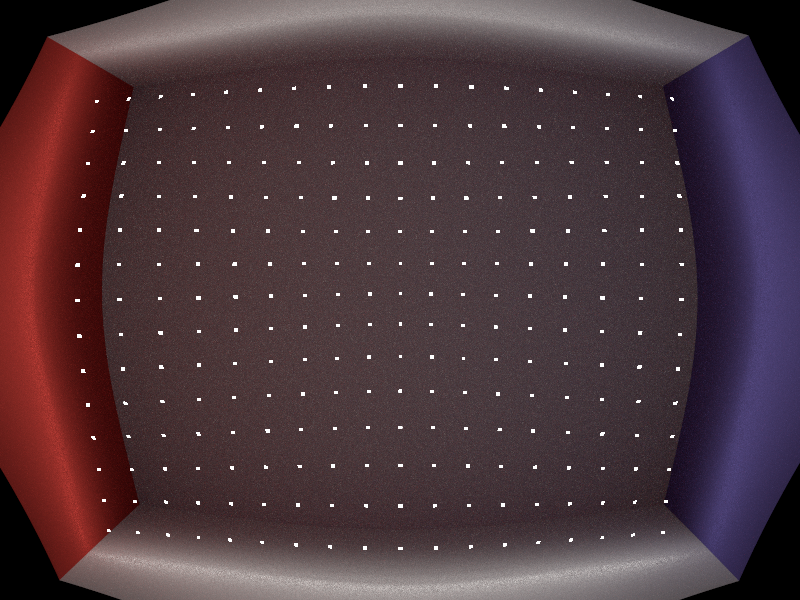
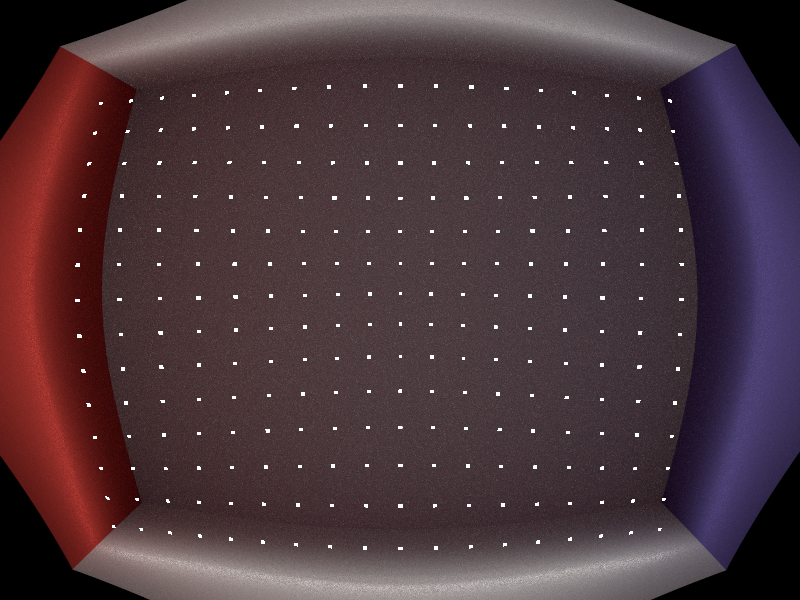
Non-Spherical Aperture
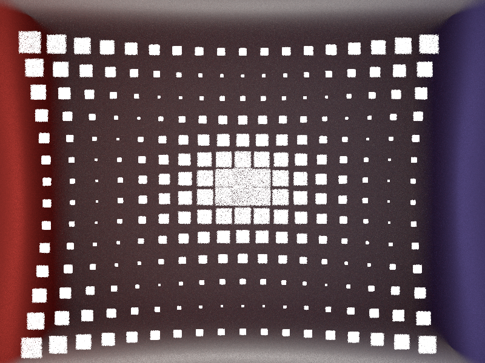
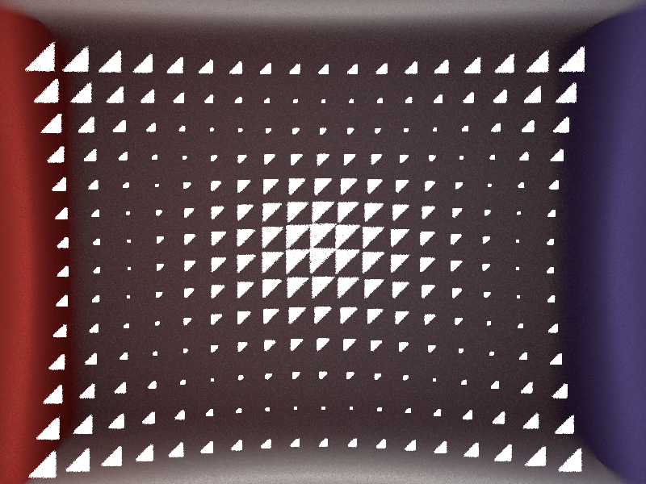
Feature 3: Environment Map Emitters
Copium
 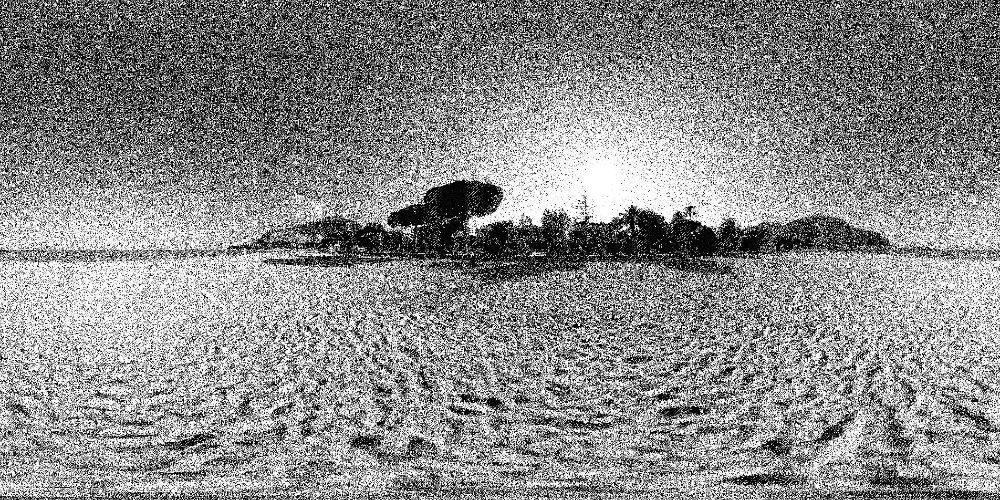
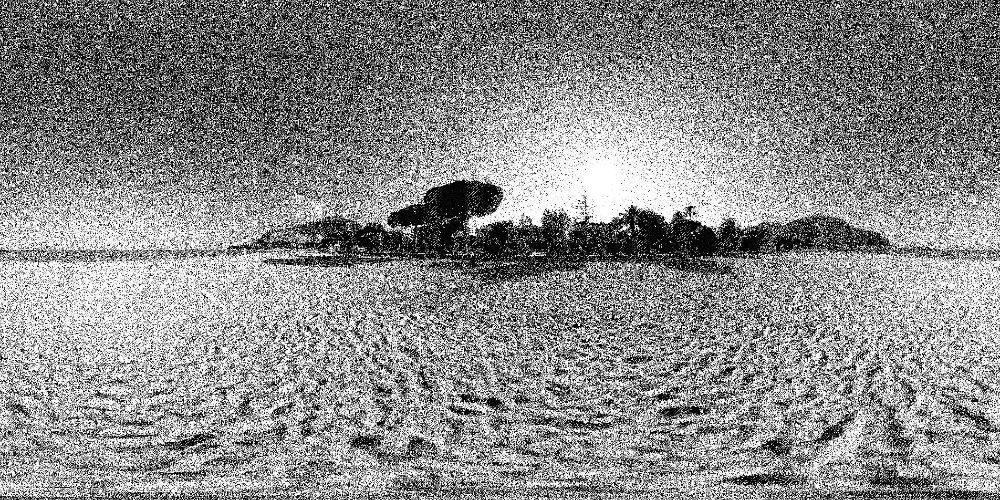

Feature 4: Images as Textures
Copium
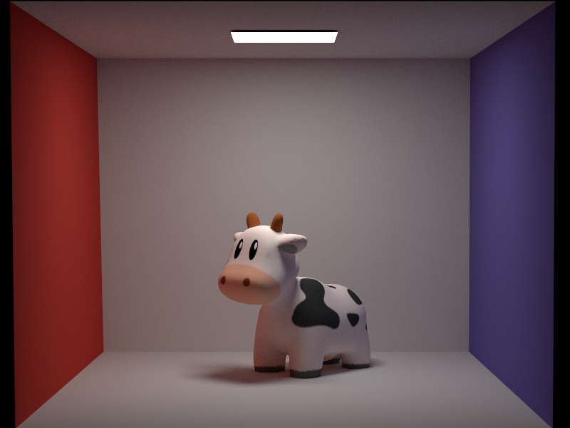
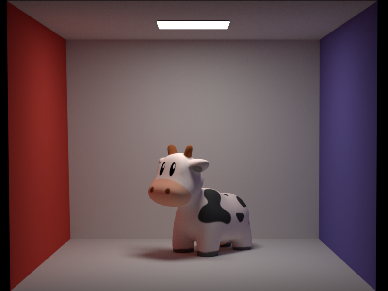
Feature 5: Normal Mapping
Copium
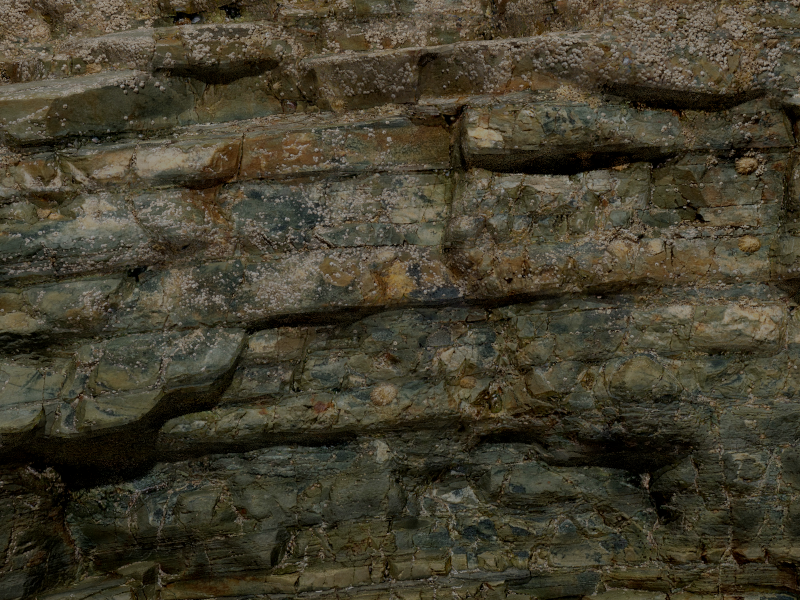
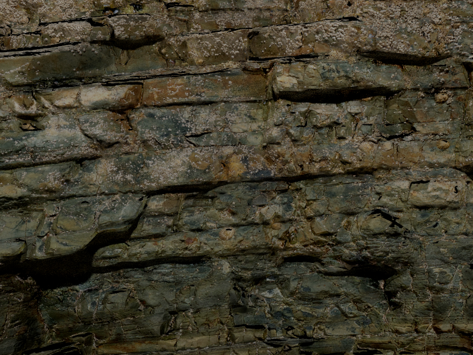
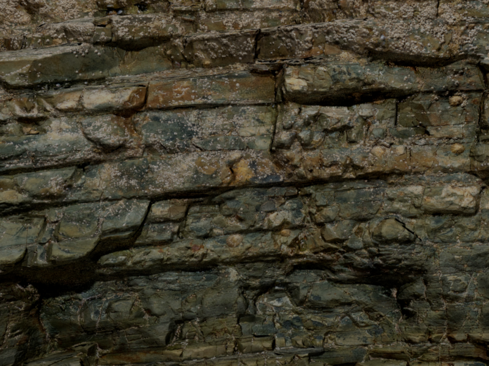
Feature 6: Textured Area Emitters
TODO FIX
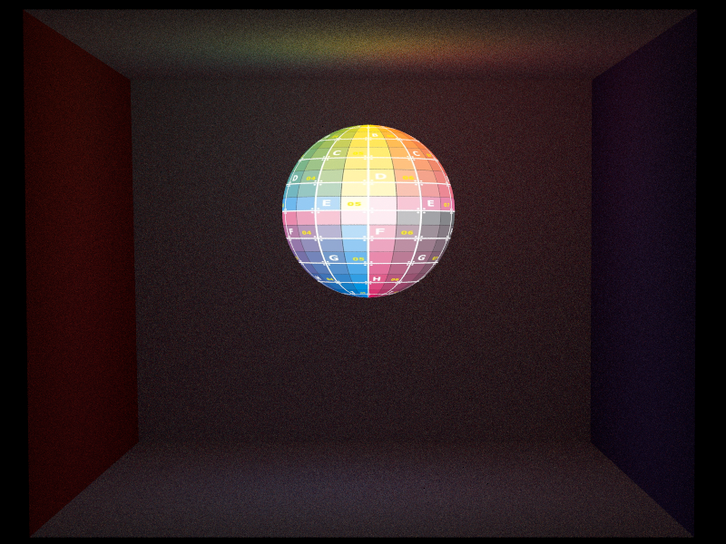